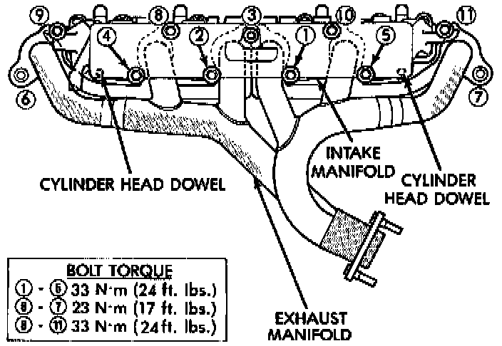

Intake Manifold: Service and Repair
REMOVALNOTE: The engine intake and exhaust manifold must be removed and installed together. The manifolds use a common gasket at the cylinder head.
1. Disconnect the battery negative cable.
2. Remove air cleaner inlet hose from throttle body assembly.
3. Remove the air cleaner assembly.
4. Remove the throttle cable, vehicle speed control cable (if equipped) and the transmission line pressure cable.
5. Disconnect the following electrical connections and secure their harness out of the way:
- Throttle Position Sensor
- Idle Air Control Motor
- Coolant Temperature Sensor (at thermostat housing)
- Intake Air Temperature Sensor
- Oxygen Sensor
- Crank Position Sensor
- Six (6) Fuel Injector Connectors
6. Disconnect the Map Sensor, HVAC, and Brake Booster vacuum supply hoses at the intake manifold.
7. Perform the fuel pressure release procedure.
8. Disconnect and remove the fuel system supply line from the fuel rail assembly.
9. Loosen the accessory drive belt. Loosen the tensioner.
10. Remove the power steering pump and bracket from the intake manifold and set aside.
11. Raise the vehicle.
12. Disconnect the exhaust pipe from the engine exhaust manifold. Discard the seal.
13. Lower the vehicle.
14. Remove the intake manifold and engine exhaust manifold.
INSTALLATION
If the manifold is being replaced, ensure all the fitting, etc. are transferred to the replacement manifold.
1. Install a new engine exhaust/intake manifold gasket over the alignment dowels on the cylinder head.

2. Position the engine exhaust manifold to the cylinder head. Install fastener Number 3 and finger tighten at this time.
3. Install intake manifold on the cylinder head dowels.
4. Install washer and fastener Numbers 1, 2, 4, 5, 8, 9, 10 and 11.
5. Install washer and fastener Numbers 6 and 7.
6. Tighten the fasteners in sequence and to the specified torque.
- Fastener Numbers 1 through 6-Tighten to 33 Nm (24 ft. lbs.) torque.
- Fastener Numbers 6 and 7-Tighten to 31 Nm (23 ft. lbs.) torque.
- Fastener Numbers 8 through 11-Tighten to 33 Nm (24 ft. lbs.)
7. Install the power steering pump and bracket to the intake manifold. Tighten the belt to specification.
8. Install the fuel system supply line to the fuel rail assembly. Before connecting the fuel supply line to the fuel rail inspect the 0-rings and replace if necessary.
9. Connect all electrical connections on the intake manifold.
10. Connect the vacuum hoses previously removed.
11. Install throttle cable, vehicle speed control cable (if equipped).
12. Install the transmission line pressure cable (if equipped).
13. Install air cleaner assembly.
14. Connect air inlet hose to the throttle body assembly.
15. Raise the vehicle.
16. Using a new exhaust manifold seal, connect the exhaust pipe to the engine exhaust manifold. Tighten the bolts to 31 Nm (23 ft. lbs.).
17. Lower the vehicle.
18. Connect the battery negative cable.
19. Start the engine and check for leaks.